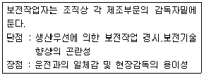

자동차정비기능장 (2005-04-03 기출문제)
1과목: 임의구분
1. 배기가스의 유해가스 저감장치 중 E.G.R 방식이란?
- 배기가스 정화방식
- 배기가스 재순환방식
- 촉매 재연소방식
- 배기가스 조절방식
(정답률: 96%)

2. 디젤기관의 연소실 중 폭발압력이 가장 낮고 디젤 노크를 일으키기 어려운 연소실은 어느 것인가?
- 직접 분사실식
- 와류실식
- 공기실식
- 예연소실식
(정답률: 58%)
3. 디젤기관에서 회전속도 오차검출 방식이 아닌 것은?
- 원심 조속기
- 진공 조속기
- 전기식 조속기
- 유압식 조속기
(정답률: 60%)
4. 기관의 효율을 향상시키기 위한 흡기다기관의 필요조건이 아닌 것은?
- 흡입공기의 고온화
- 혼합기의 균일화
- 연료 기화성의 향상
- 체적효율의 향상
(정답률: 77%)
5. 흡입공기량 직접 검출방식이 아닌 장치는?
- L - 제트로닉
- LU - 제트로닉
- D - 제트로닉
- LH - 제트로닉
(정답률: 66%)
6. 2행정 1사이클 기관의 도시 평균 유효압력이 10kgf/cm2, 총배기량 4000cc, 회전수 3375rpm일 경우 도시마력은?
- 200PS
- 250PS
- 300PS
- 350PS
(정답률: 45%)
7. 연료 파이프가 어떤 원인에 의해 국부적으로 열을 받으면 어떤 현상이 유발되는가?
- 프리이그니션
- 포스트이그니션
- 노크
- 베이퍼록
(정답률: 81%)
8. 압축 및 폭발 행정시 피스톤과 실린더벽 사이로 탄화수소(HC)가 다량 포함된 미연소가스가 누출되는 현상을 무엇이라고 하는가?
- 블로바이(blow-by)현상
- 블로백(blow-back)현상
- 블로다운(blow-down)현상
- 블로업(blow-up)현상
(정답률: 95%)
9. 압축비 16.5, 단절비 1.5인 디젤기관의 이론 열효율은 몇 %인가? (단, 비열비는 1.3이다.)
- 51
- 54
- 58
- 63
(정답률: 40%)
10. 가솔린 기관에서 점화 계통을 차단하여도 기관의 점화가 계속 발생하는 현상을 무엇이라고 하는가?
- 런온(run-on)
- 스파크 이그니션(spark ignition)
- 럼블(rumble)
- 와일드핑(wild-ping)
(정답률: 80%)
11. 구동 벨트의 장력이 규정치보다 헐거울 경우 기관에 미치는 영향으로 가장 거리가 먼 것은?
- 기관이 과열되기 쉽다.
- 발전기의 출력이 저하된다.
- 소음이 발생하며 구동벨트의 손상이 촉진된다.
- 흡배기 밸브의 개폐시기가 변하여 기관출력이 감소한다.
(정답률: 91%)
12. 터보챠저기관의 특징을 설명한 것 중 틀린 것은?
- 고온 고압의 배출가스를 이용한다.
- 노킹센서를 이용하여 노킹을 억제한다.
- 기관의 설계시 압축비를 높일 수 있어 유리하다.
- 같은 배기량으로 높은 출력을 얻을 수 있다.
(정답률: 61%)
13. 전자제어 가솔린 분사 기관의 에어플로우미터 중 기관이 흡입하는 공기가 통과할 때 생기는 압력차에 의하여 메저링플레이트가 밀려서 열리는 원리를 이용하여 흡입공기량을 계측하는 에어플로우미터는?
- 베인식 에어플로우미터
- 칼만 와류식 에어플로우미터
- 핫 와이어식 에어플로우미터
- 핫 필름식 에어플로우미터
(정답률: 78%)
14. 커먼 레일 기관의 크랭킹시 레일압력조절 밸브의 공급전원이 0[V]일 때, 나타나는 증상은?
- 시동 안됨
- 가속 불량
- 매연과다 발생
- 아이들(idle) 부조
(정답률: 88%)
15. 조속기를 설치한 기관에서 회전수 2000rpm 으로 유지하려 한다. 무부하시 2100rpm 이고, 전 부하시 1900rpm 이면, 조속기의 속도처짐(속도 변화율)은 몇 % 인가?
- 10.5
- 11.5
- 12.5
- 13.5
(정답률: 44%)
16. 다음은 LPG 연료 제어시스템의 공연비제어를 위해 사용되는 각종 액추에이터의 종류를 나열한 것이다. 해당 없는 것은?
- 메인 듀티솔레노이드(믹서)
- 시동 솔레노이드(믹서)
- 슬로우 컷 솔레노이드(베이퍼라이저)
- 고속 기상 솔레노이드 밸브(믹서)
(정답률: 57%)
17. 경계윤활 영역에서 접촉면 중앙의 최고압력 부분에서 경계층이 항복을 일으켜서 마찰계수가 급격히 증가하는 상태에 달하는 단계는?
- 제1영역
- 천이영역
- 부분적 접촉
- 완전접촉 융착
(정답률: 65%)
18. 실린더 내 압력파형으로부터 얻어지는 정보가 아닌 것은?
- 최고압력
- 착화지연
- 압축압력 및 온도
- 배출가스 성분
(정답률: 83%)
19. 다음 중 검사를 판정의 대상에 의한 분류가 아닌 것은?
- 관리 샘플링검사
- 로트별 샘플링검사
- 전수검사
- 출하검사
(정답률: 68%)
20. nP관리도에서 시료군마다 n=100 이고, 시료군의 수가 k=20이며, ΣnP = 77이다. 이때 nP관리도의 관리상한선 UCL을 구하면 얼마인가?
- UCL = 8.94
- UCL = 3.85
- UCL = 5.77
- UCL = 9.62
(정답률: 43%)
2과목: 임의구분
21. 원재료가 제품화 되어가는 과정 즉 가공, 검사, 운반, 지연, 저장에 관한 정보를 수집하여 분석하고 검토를 행하는 것은?
- 사무공정 분석표
- 작업자공정 분석표
- 제품공정 분석표
- 연합작업 분석표
(정답률: 79%)
22. 파레토그림에 대한 설명으로 가장 거리가 먼 내용은?
- 부적합품(불량), 클레임 등의 손실금액이나 퍼센트를 그 원인별, 상황별로 취해 그림의 왼쪽에서부터 오른쪽으로 비중이 작은 항목부터 큰 항목 순서로 나열한 그림이다.
- 현재의 중요 문제점을 객관적으로 발견할 수 있으므로 관리방침을 수립할 수 있다.
- 도수분포의 응용수법으로 중요한 문제점을 찾아내는 것으로서 현장에서 널리 사용된다.
- 파레토그림에서 나타난 1∼2개 부적합품(불량) 항목만 없애면 부적합품(불량)률은 크게 감소된다.
(정답률: 56%)
23. 다음 내용은 설비보전조직에 대한 설명이다. 어떤 조직의 형태인가?

- 집중보전
- 지역보전
- 부문보전
- 절충보전
(정답률: 72%)
24. 수요예측 방법의 하나인 시계열분석에서 시계열적 변동에 해당되지 않는 것은?
- 추세변동
- 순환변동
- 계절변동
- 판매변동
(정답률: 60%)
25. 앞바퀴 정렬 측정 전 준비사항과 거리가 먼 것은?
- 차량을 적재 상태로 한다.
- 타이어 공기압을 규정으로 맞춘다.
- 조향링키지 체결상태를 확인한다.
- 타이로드 엔드의 헐거움을 점검한다.
(정답률: 93%)
26. 바퀴잠김방지식 제동장치(ABS)의 기능 설명 중 틀린 것은?
- 방향 안정성 확보
- 조향 안정성 확보
- 제동거리 단축
- 주행성능 향상
(정답률: 79%)
27. 유압식 자동변속기에서 출력축에 부착되어 자동차의 속도에 따라 유압을 제어 하도록 하는 밸브는?
- 거버너 밸브
- 스로틀 밸브
- 가속 밸브
- 시프트 밸브
(정답률: 63%)
28. 자동변속기 제어장치에서 스로틀밸브가 설치되는 곳은?
- 밸브보디
- 유성기어유닛
- 액츄에이터
- 흡기다기관
(정답률: 63%)
29. 정밀도 검사대상 기계, 기구가 아닌 것은?
- 제동력 시험기
- 사이드슬립 측정기
- 속도계 시험기
- 엔진 성능 시험기
(정답률: 83%)
30. 오버드라이버 장치에 관한 설명으로 가장 옳은 것은?
- 언덕길 주행시 작동한다.
- 크랭크 축 회전속도보다 추진축 회전 속도를 빠르게 한다.
- 저속시에 작동한다.
- 회전력을 증대시킬 때 작동한다.
(정답률: 55%)
31. 빗길 주행 중 쉽게 발생할 수 있는 현상은?
- 스탠딩 웨이브 현상
- 로드 홀딩 현상
- 하이드로 플레닝 현상
- 페이드 현상
(정답률: 85%)
32. 어떤자동차 마스터실린더의 푸시로드에 작용하는 힘이 150kgf, 피스톤 면적이 3cm2라고 하면 이때 마스터 실린더 내에 발생하는 유압은 몇 kgf/cm2 인가?
- 40
- 50
- 60
- 70
(정답률: 66%)
33. 자동차 종감속기어에 주로 사용되는 하이포이드 기어의 장점으로 틀린 것은?
- 추진축의 높이를 낮게 할 수 있다.
- 동일 조건하에 스파이럴 베벨기어에 비해 구동 피니언을 크게 할 수 있어 강도가 증가된다.
- 링기어 지름의 8‾12%를 중심 위로 옾셋 시킨다.
- 회전이 정숙하다.
(정답률: 66%)
34. 공기 브레이크식 제동장치에서 공기탱크 내의 공기압력은 일반적으로 몇 kgf/cm2정도인가?
- 1∼4
- 5∼7
- 10∼13
- 14∼17
(정답률: 60%)
35. 자동차의 중량이 1275kg, 여유 구동력 200kg, 회전부분 상당중량은 자동차 중량의 5% 일 때 가속도는?
- 1.16 m/sec2
- 1.26 m/sec2
- 1.36 m/sec2
- 1.46 m/sec2
(정답률: 30%)
36. 브레이크 페달을 밟았을 때 하이드로백 내의 작동 중 잘못 설명 된 것은?
- 공기 밸브는 닫힌다.
- 진공 밸브는 닫힌다.
- 동력 피스톤이 하이드로릭 실린더 쪽으로 움직인다.
- 동력 피스톤 앞쪽은 진공 상태이다.
(정답률: 56%)
37. 1500kg 중량의 자동차가 출발하여 90km/h의 속도까지 가속하는데 20초 걸렸다면 이 자동차의 가속저항은 몇 kg인가? (단, 회전부분 상당 중량은 무시)
- 75
- 90
- 153.1
- 191.3
(정답률: 35%)
38. 브레이크 페달을 밟았을 때 자동차가 한쪽으로 쏠리는 원인이 아닌 것은?
- 라이닝 간극 조정 불량
- 앞바퀴 정렬 상태 불량
- 타이어 공기압 불균일
- 조향기어 유격 과소
(정답률: 78%)
39. 단판 마찰클러치 접속시 발생하는 회전충격을 흡수하는 스프링은?
- 쿠션스프링
- 토션스프링
- 클러치스프링
- 막스프링
(정답률: 58%)
40. 현가장치의 특성에 대한 설명 중 맞는 것은?
- 스프링 아래 질량이 커야 요철 노면주행에 유리하다.
- 스프링 상수는 작용하는 힘과 스프링 변형량의 비로 나타낸다.
- 자동차가 무겁고 스프링이 약하면 주파수는 많고 진폭은 작다.
- 토션바 스프링의 길이를 길게 하면 비틀림각이 작으므로 스프링 작용은 크다.
(정답률: 62%)
3과목: 임의구분
41. 어떤 자동차의 축거가 2.4m, 바깥쪽 앞바퀴의 조향각이 30° 이다. 최소 회전반경은 얼마인가?(단, 바퀴의 접지면 중심과 킹핀 중심과의 거리는 20cm이다.)
- 5.2m
- 4.5m
- 5.0m
- 4.8m
(정답률: 49%)
42. 전자제어 현가장치(E.C.S )장착 자동차에서 차고 센서가 감지하는 곳은?
- 지면과 액슬
- 프레임과 지면
- 차체와 지면
- 액슬과 차체
(정답률: 60%)
43. 기어 변속시 기어 크래시(crash)를 방지하는 변속기 내의 특수 장치 명칭은?
- 헤리컬 기어
- 카운터 기어
- 싱크로나이저
- 시프트 포크
(정답률: 88%)
44. 기관의 점화장치 중 DLI시스템에 대한 설명으로 틀린것은?
- 잡음에 대해 유리하다.
- 고속이 되어도 발생전압이 거의 일정하다.
- 점화시기의 위치 결정을 위한 센서가 필요하다.
- 점화코일이 성능은 떨어지나 간단한 구조이다.
(정답률: 85%)
45. 저항 R1 = 4Ω, R2 = 6Ω을 병렬 접속하였다. 합성저항 R은 몇 Ω인가?
- 2.4
- 0.42
- 10
- 2
(정답률: 54%)
46. 전조등의 감광장치가 아닌 것은?
- 저항을 쓰는 방법
- 이중 필라멘트를 쓰는 방법
- 부등을 쓰는 방법
- 굵은 배선을 쓰는 방법
(정답률: 89%)
47. 교류 발전기에서 4극 발전기를 3,000RPM으로 운전할 경우 주파수(f)는 몇 Hz인가?
- 80Hz
- 100Hz
- 120Hz
- 150Hz
(정답률: 40%)
48. 차량의 바디 전장 부분에서 사용되고 있는 다중 정보 통신 시스템의 데이터 구조에 속하지 않는 것은?
- 스타트 비트
- 바이트 비트
- 데이터 프레임
- 스톱 비트
(정답률: 46%)
49. 경음기가 울리지 않는 원인이 아닌 것은?
- 배터리 방전
- 휴즈 단선
- 접촉 불량
- 시동 불량
(정답률: 75%)
50. 완전 충전되어 있는 축전지의 전해액은 다음 어느 것에 해당하는가?
- H2SO4
- H2O
- PbSO4
- PbO2
(정답률: 74%)
51. 응축기 냉각핀이 막혀 공기흐름이 막혔을 경우, 저·고압측 압력변화가 정상일 때와 비교해서 맞는 것은?
- 저압측 압력이 떨어진다.
- 저압측 압력은 상승되고 고압측은 떨어진다.
- 저·고압 모두 압력이 상승된다.
- 저·고압 모두 압력이 떨어진다.
(정답률: 77%)
52. 기동 전동기의 동력전달방식에 속하지 않는 것은?
- 피니언 섭동식
- 벤딕스식
- 전기자 섭동식
- 스프래그식
(정답률: 78%)
53. 색의 3요소가 아닌 것은?
- 보색
- 색상
- 명도
- 채도
(정답률: 81%)
54. 스프레이 건에 대한 설명 중 잘못된 것은?
- 중력식 건 : 중력에 의하여 도료가 공급되는 방식
- 흡상식 건 : 공기의 분사에 의하여 도료가 위로 빨려 올라오는 방식
- 에어레스 건 : 도료에 고압의 압력을 가하여 스프레이 점도가 낮은 도료의 도장에 적당
- 압송식 에어건 : 도료에 압력을 가하여 에어 스프레이 건으로 분무 되는 방식
(정답률: 58%)
55. 강재의 재질을 검사하는 방법으로 잘못된 것은?
- 불꽃 시험방법
- 두들겨서 소리로 시험하는 방법
- 꺾어서 시험하는 방법
- 줄로 밀어서 시험하는 방법
(정답률: 56%)
56. 모노코크 바디의 설명 중에서 잘못된 것은?
- 충격을 흡수할 수 있도록 일부러 약한 부위를 만들어준다.
- 충격을 받으면 서스펜션 조립부가 상향으로 올라가는 변형을 일으킨다.
- 충격흡수를 위해 두께를 바꾸거나 구멍을 만들어 준다.
- 충격 흡수를 위해 사다리형 프레임을 보디와 별도로 사용한다.
(정답률: 78%)
57. 퍼티의 목적으로 가장 적합한 것은?
- 소지 평활성에 있다.
- 부착력을 좋게 하기 위해서이다.
- 광택을 내기 위해서이다.
- 광택을 없애기 위해서이다.
(정답률: 80%)
58. 프레임 센터링 게이지란?
- 프레임의 마운틴 포트 측정
- 프레임의 중심선 측정
- 프레임 센터의 개구부 측정
- 프레임 행거 측정
(정답률: 77%)
59. 자동차 철판 중 아연도금강판에 폴리에스테르 퍼티를 직접 도포하여 발생되는 결함으로 가장 옳은 것은?
- 브리스터(Blister, 부풀음)
- 핀홀(Pin-Hole)현상
- 흐름(Sagging)현상
- 오렌지 필(Orange Peel)현상
(정답률: 84%)
60. 용접 후에 발생되는 팽창과 수축은 어떤 결함에 속하는가?
- 치수상 결함
- 성질상 결함
- 화학적 결함
- 구조상 결함
(정답률: 57%)